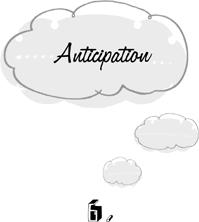

{% include JB/setup %}
{% raw %}
<div>

<h1 id="filepos84427" class="calibre19"><span class="calibre20"><span class="bold"><a class="calibre21"></a></span></span></h1><div class="calibre16"> </div>
<p class="calibre22">                 <a class="calibre23"></a><a class="calibre23"></a>n all the traps discussed so far, we fall into the error of working too hard. When we persist, we work on a goal that has lost its value; when we amplify, we work harder than necessary to achieve the goal; in fixation, we work on our goal when there’s nothing that needs to be done; and in reversion, we work on a goal that’s already beyond reach. But working too hard is only one of four cardinal errors. Whatever we undertake, we may do either too much or too little, and we may do it too late or too soon. Only two of these errors are generally recognized in our culture: too little and too late. We seem to make the tacit assumption that the more we work on our projects and the sooner we start, the better will be the outcome. Nothing could be further from the truth.</p>
<p class="calibre22"><em class="calibre9">Anticipation</em> is the trap of starting too soon. It’s true that if we start too late, we may not have enough time to finish. But there are also penalties for starting too soon. When we anticipate, we render ourselves liable to <em class="calibre9">overworking, preworking</em>, and <em class="calibre9">working in vain.</em></p>
<p class="calibre4"></p><div class="calibre5"> </div>
<p class="calibre24"><a class="calibre23"></a>We <em class="calibre9">overwork</em> if we act now when the same result can more easily be attained at a later time. Here is a contrived example that clearly delineates the nature of this trap. Expecting a letter of acceptance or rejection, we compose two replies—one for each possibility. Had we waited until the letter was received, we would have needed to do only half as much work, and the result would have been the same. Hence we overworked. In this case the overwork is so transparent that only the most severely trapped would engage in it. But many of us would be unable to resist giving an occasional thought to each reply in the course of the day. Half of these thoughts are destined to prove useless.</p>
<p class="calibre22">Of course the results are not always the same if we delay. Later on, there may not be enough time to finish the job properly. It’s not a trap to act now if a later start would jeopardize the outcome. But much of what we do from day to day can just as well be done at another time. We can just as well mail a letter on Monday morning as on Sunday if there’s no weekend postal service. The results would be exactly the same. In that case, the optimal time to act is when this invariant result may be obtained for the least cost in <a class="calibre23"></a>time, energy, and resources. If the cost is the same throughout a period of time, then any time during that period is as good as another for getting the job done. But it often happens that some moments are more opportune for action than others. If we expect to pass a mailbox on our way to work on Monday, for example, it would be anticipatory to make a special trip to the mailbox on Sunday. There’s nothing to be gained from the earlier start that might offset the extra work. Similarly, there would ordinarily be no advantage to composing a reply—or even to thinking about a reply—to an expected letter before receiving it rather than afterward. Therefore we should wait until the job simplifies itself.</p>
<p class="calibre22">This analysis doesn’t apply to work that’s valued for its own sake. If we mail our letter on Sunday because we want to take a walk on a beautiful day, our time has not been wasted, even if we pass by the same spot again on Monday morning. We’re glad to have this little excuse to go out. And doing what we like is never a trap.</p>
<p class="calibre22">Generally speaking, work simplifies itself with the passage of time. Delay permits new information to arrive that may save us trouble. Before we commit ourselves to a certain approach, <a class="calibre23"></a>a better one may come into view. Dead ends may be revealed before we butt our heads against them. We may receive a new tool that facilitates the work. Above all, as families of possibilities coalesce into single realities, there’s a steady diminution in the number of contingencies that need to be taken into account. In the place of two possible letters to respond to, we have only one real letter. Instead of ten vocational options that are compatible with what we know of our interests and abilities when we’re in the sixth grade, there are only two to choose from when we finish high school. Work streamlines itself over time.</p>
<p class="calibre22">This doesn’t mean that we should leave everything to the last minute. If we want to travel to the Orient, we can’t delay our preparations until the day of departure. There’s simply too much to be done. We have to obtain our passports, visas, vaccination certificates, and traveler’s checks; our employers have to be forewarned; the cat must be assisted in finding temporary accommodations. It’s true that we may later discover easier ways in which some of these tasks might have been accomplished. Unless we take this risk, however, we have no chance of going at all. But if a piece of work <em class="calibre9">can</em> be delayed without <a class="calibre23"></a>endangering the chance of its timely completion, then it <em class="calibre9">should</em> be delayed. For we lose nothing and gain the advantage of basing our actions on the latest and best information.</p>
<p class="calibre22">Anticipatory overworking is closely related to the phenomenon of amplification. The difference lies in the temporal arrangement of certain events. When we overwork because of anticipation, the same job can be done with less effort if only we wait for a more propitious moment. When we amplify, the same job can be done more easily right now.</p>
<p class="calibre25">Anticipation may lead to <em class="calibre9">preworking</em> if there’s a chance that our work will be undone by changing circumstances. After we prematurely compose replies to both an acceptance and a rejection, an unforeseen third option materializes: a request for more information. Now we have not merely worked harder than necessary. In this case, our work has come to nothing. We have to begin again from scratch. We might as well have watched TV. What we’ve done is no more than a useless preliminary to the real job. It was <em class="calibre9">prework.</em></p>
<p class="calibre22">To be sure, we can never make ourselves entirely safe from the undoing of our work by <a class="calibre23"></a>changing circumstances. We engage in exhaustive investigations into the relative merits of Florida and Arizona as retirement homes, and the character of these places changes so drastically in a few years’ time that all our calculations are rendered obsolete. No matter how late we act, the Universe may still pull the rug out from under our feet at the last minute. But it’s pointless to increase this risk without any hope of compensation. Eventually we must act or suffer the penalty of too-long delay. But <em class="calibre9">so long as the work can be postponed without penalty, it should be postponed.</em> For by letting the Universe unfold more of its plan before we act, we diminish the chance that our work will be undone.</p>
<p class="calibre22">A peculiar and extreme type of preworking occurs in <em class="calibre9">existential anticipation.</em> We fall into this trap when we make judgments about the nature or quality of life taken as a whole. If we want life to be happy enough or meaningful enough to meet some standard that we’ve set for it, our goal can be neither definitely met nor definitely missed until life itself has come to an end. Our fate may have been dismal until now; but tomorrow may tell a different story. And a present sense of satisfaction may be taken away from us overnight. “Call no <a class="calibre23"></a>man happy until he is dead,” goes an ancient Greek proverb. The final judgment on the quality of our life can’t be made in the midst of life itself. Hence it can never be made. Yet we anticipate it. Here is a flagrant example of tackling a problem before all the information is in.</p>
<p class="calibre22">Since our existential judgments are perpetually liable to being undone, it’s always too soon to make them. If these perpetually premature assessments are favorable, we only waste some time in useless calculations. But if they’re unfavorable, the result can be devastating. Premature negative evaluations of the whole of life are the central feature of chronic depression. In the extreme, they lead to the most anticipatory of all acts: suicide. The suicide looks down the corridor of time to its very end and finds nothing there to make life worth living. What he overlooks is that his information may change. Even if his despair stems from an existential doubt as to the very purpose of human existence, it’s possible that this doubt will be resolved in an unimagined way tomorrow, next year, or twenty years from now. But the suicide decides now that this will never happen. In order to pass such a judgment on the whole of his life and its possibilities, <a class="calibre23"></a>he has to view it from a vantage point beyond his own death. Thus he arrives at the final stage of getting ahead of oneself.</p>
<p class="calibre22">Questions about the nature of life taken as a whole are always premature, because we’re never finished with living. This doesn’t mean that we must always refrain from asking them. They are, after all, fascinating topics for analysis and conjecture. But it’s always too soon to settle on an answer.</p>
<p class="calibre25">The third penalty for anticipation is to have <em class="calibre9">worked in vain</em> because the value of the goal was lost before we reached it. We purchase theater tickets a week in advance even though the theater has been half empty for every performance. And then we’re called out of town on the appointed day, or we fall ill, or read a review so devastating that we lose all desire to attend. Now we’re stuck with worthless tickets. In this instance, it’s neither a matter of having worked harder than necessary to achieve the goal nor a case of needing to do the work over again in order to resecure the goal. What was secured remains in our possession. But its value is lost. There was no need to do anything in the first place. We have worked in vain. If every performance had been sold out, we <a class="calibre23"></a>would have had to take our chances or give up the idea of going right from the start. As it was, we would have risked nothing by delaying our purchase until the last minute. It isn’t having worked in vain by itself that makes our action anticipatory. It’s having increased the risk of working in vain for no purpose.</p>
<p class="calibre22">We often end up having worked in vain because our problems take care of themselves. Having considered what to say to an inattentive waiter if he doesn’t come to our table in five minutes, we find him before us forthwith, all smiles and apologies. Having struggled for years to make ourselves financially independent, we suddenly inherit a fortune. Our considerations and our struggles have been in vain. Like the risk of finding our work undone, we can never entirely eliminate the possibility that the goal will lose its value before we arrive at it. But again, it’s pointless to increase this risk unnecessarily. It costs us nothing to ignore an inattentive waiter until we’re actually ready to confront him. By doing our work five minutes ahead of time, we fail to take advantage of the possibility that the problem will disappear without our having to lift a finger. On the other hand, it’s perilous to laze about in the <a class="calibre23"></a>hope of receiving a dubious inheritance. If the waiter persists in overlooking us, we’re none the worse for having waited until the last moment before dealing with the situation. But we’re in deep trouble if the inheritance that we counted on doesn’t come our way.</p>
<p class="calibre22">Working in vain is closely related to the trap of persistence. As with overworking and amplification, the difference is temporal. When we persist, we work toward a goal that has already lost its value. When we work in vain, we strive toward a goal that will lose its value before we acquire it. We can never know that we are working in vain until after the fact. The trap is to increase the probability of this event for no purpose.</p>
<p class="calibre25">Certain circumstances seem to invite trapped thinking of more than one sort. One of these occurs when we face a danger that we’re powerless to avert. In this situation, we may uselessly worry about our looming misfortune, in which case we fall into the trap of fixation. We may also commit a form of anticipation that causes us to work in vain. In <em class="calibre9">pre-resignation</em>, we work on our thoughts and feelings in such a way that we’re able to accept the feared event with equanimity. <a class="calibre23"></a>Threatened by a visit from a tiresome relative, we comfort ourselves with the thought that the evening will soon be over, that tomorrow is another day, that suffering builds character. In short, we resign ourselves to our fate—<em class="calibre9">before</em> it overtakes us.</p>
<p class="calibre22">Now pre-resignation is not quite so certainly useless as mere worrying. If the worst does come to pass, we will feel better for having resigned ourselves. But the worst may not come to pass— our relative may come down with the flu—and then we will have made ourselves gloomy for nothing. Our work will have been in vain.</p>
<p class="calibre22">Whether such work is a trap depends, as with all activities geared toward a future end, on whether it can be postponed without penalty. It may be that the impending calamity will leave us in such an enfeebled state that we’ll no longer have the inner resources to accept our fate. In that case, we have to assess the relative advantage of resignation before the fact against the possibility of having worked in vain. But it’s usually just as easy to resign ourselves after the fact as before. When our relative is firmly installed in our living room, cocktail in hand, we can excuse ourselves for a moment, go into the bedroom, and make our <a class="calibre23"></a>peace as well as we can. Certainly, if we make a habit of always preparing ourselves for the worst, we’ll be working in vain far more often than we need. There’s usually time enough to accept our fate when it finally overtakes us. Instead of making ourselves perpetually gloomy by always assuming the worst, we would do better to make no assumptions at all and simply continue to live our life. If the worst happens, then we can see how we’ll get through it.</p>
<p class="calibre25">Anticipation has a major characteristic in common with the trap of fixation. In both traps, we needlessly concern ourselves with the future. The difference is that in fixation we simply dwell on the future without attempting to do anything constructive about it. In anticipation, our activity is intended to be constructive; but it’s premature and therefore liable to overworking, preworking, and working in vain. If we worry that our missing wallet won’t turn up at the lost and found, we are fixating. If we make plans to replace our lost driver’s license and library card before getting to the lost and found, we’re anticipating. Unlike mere worrying, these plans may prove to be useful. But we would do better to postpone their consideration <a class="calibre23"></a>until we knew whether they were necessary. As we saw in the previous section, anticipation is not quite so senseless as worrying and other forms of fixation, since there’s at least a chance that anticipatory work will turn out to be useful.</p>
<p class="calibre22">A not-quite-so-senseless anticipation may lay the groundwork for an irretrievably senseless fixation, however. Having begun too soon, we may run out of things to do before the project can be brought to completion. And then we’re tempted simply to sit and wait. We start our party preparations too early in the day and finish several hours before the guests are due to arrive—and then we fixate on their arrival. Had we not anticipated, we wouldn’t have given ourselves an <em class="calibre9">opportunity</em> to fixate.</p>
<p class="calibre22">The greater the amount of time by which we anticipate, the greater the opportunity for subsequent fixation. If we pack for a trip a week too soon, we run the risk of giving up the week to useless musings about the forthcoming venture. It’s as if we had already departed. And if we pack two weeks too soon, we take our mental leave two weeks before our body can follow.</p>
<p class="calibre22">At the other temporal extreme of the same phenomenon are miniature episodes wherein we <a class="calibre23"></a>anticipate by a few moments and then fixate for a few moments until the tide of events once again catches up with us. We get up from our seat on the bus before it’s necessary—and stand a while by the door. We take out our house key when we’re still a block away from the front door—and hold it stuck out before us, ready for action, as we walk down the street. More than one person has been seen to stand at the door of a bus with his keys in hand, looking for all the world as though he planned to unlock the bus to let himself out.</p>
<p class="calibre22">These momentary quirks are not very important in themselves. But they betoken a more general habit of mind that seriously interferes with optimal functioning. The person who takes out her keys too soon is the same one who arrives at the airport too early and sits. Instead of making her actions timely and suited to the circumstances, she follows a rigid pattern of beginning as soon as the task is formulated, doing as much as can be done at this early date, and then waiting, immobilized, until she can continue again. We would expect such mechanical behavior from a simple robot that was built for no other purpose than to turn keys in locks or travel to and from airports. A device of this kind might as well go to <a class="calibre23"></a>the airport right away and turn itself off until the next run. It has nothing else to do.</p>
<p class="calibre22">We’re never so prone to anticipation as when we draw up schedules and plans for the future. It’s true that we often need to plan what to do at a later time. But planning, like every other form of work, may also be premature. Plans that are made too soon are overwork because they take possibilities into account that would eliminate themselves in time. They’re likely to be reduced to prework by changing circumstances that force us to revise our expectations. And they’re liable to prove completely unnecessary, in which case the work of planning will have been in vain. The longer we wait before formulating our plans, the less likely we are to suffer these fates.</p>
<p class="calibre22">Of course we can’t postpone indefinitely. As with all other forms of work, there comes a time when further delay would be injurious to our cause. In the case of plans, this point can be precisely specified. The time to lay our plans for the future is when they have a bearing on what we are to do <em class="calibre9">now.</em> If the dentist’s receptionist asks us when we can come in for a checkup, we must immediately make a plan because the receptionist needs an answer <em class="calibre9">now.</em> If we contemplate an escape <a class="calibre23"></a>to the golf course, we may have to make a schedule for the rest of the week in order to see whether we can afford to take the day off <em class="calibre9">now.</em> What we do now may even depend on our plans for the distant future. We wouldn’t apply to medical school <em class="calibre9">now</em> unless we had some intention of becoming a doctor in several years’ time.</p>
<p class="calibre22">But plans that have no effect on our present activity are anticipatory. By definition, we have no need of them as yet. If we’ll be eating dinner for the next half hour, it makes no difference <em class="calibre9">now</em> whether we plan to catch up on our work afterward or amuse ourselves. In either case, we’re going to be eating this soup, this entrée, and then this dessert. The decision can wait until after dinner. Therefore it <em class="calibre9">should</em> wait. After dinner, we may be apprised of an unexpected and wonderful recreational opportunity. And then our plans for working will have been made in vain.</p>
<p class="calibre22">Of all the circumstances in life, the time we least need a plan for the future is when we’re already occupied with a valuable activity. So long as the task at hand is clearly necessary or desirable, planning can be postponed without penalty until we’re finished. It’s enough to know that the present moment is well spent in doing <a class="calibre23"></a><em class="calibre9">this.</em> The future can wait until <em class="calibre9">this</em> is over. There’s nothing we can do about it now anyway. We’re already occupied.</p>
<p class="calibre22">Yet the commonest of all mental traps is to decide what to do next before we’re finished with the task at hand. Driving home from work, we decide what to do about dinner. During dinner, we plan the evening’s television viewing. Watching television, we organize the next morning’s work. At work, we anticipate lunch. At lunch, we cast our thoughts toward the business of the afternoon. In the afternoon, we think about going home … This curious habit may be called <em class="calibre9">one-step anticipation.</em></p>
<p class="calibre22">Evidently, we suffer from the delusion that we always need to know what’s going to happen next. Without a clear vision of what lies ahead, we feel like a person stumbling in the dark, who may fall over a precipice at any moment. But the analogy is inapt. When we’re already engaged in a valuable activity, it doesn’t matter that the next step is hidden in darkness because <em class="calibre9">we aren’t going anywhere.</em> Things are fine right where we are. The need to know what happens next at all times is like a primitive fear of the night that makes us insist that the ground before us be illuminated <a class="calibre23"></a>even when we have no plans to leave the cave. There’s time enough to look for precipices when we’re ready to step out.</p>
<p class="calibre22">One-step anticipation has consequences that are even more adverse than the usual penalties for anticipation. If we always try to anticipate what happens next, we can never give our undivided attention to the task at hand. The result is that we can never perform the task at hand with maximal efficiency. Immersed in deliberations about our dinner while we’re driving, we fail to see the car that suddenly cuts in front of us. And if the present activity is engaged in for the sake of pleasure, our enjoyment is dimmed by the intrusion of the future. Planning the evening’s work at the dinner table, we don’t notice the taste of our food.</p>
<p class="calibre22">Because their attention is always divided, chronic one-steppers can never function at peak efficiency or experience the higher reaches of delight. This drastic diminution of life is independent of how much of the future they anticipate at a time. There are people who remain perpetually ahead of themselves by only a moment, always casting a sideward glance at the next instant to see what will be happening there. These people might as well be a thousand years away. They’re never <a class="calibre23"></a>fully <em class="calibre9">here</em>, never just doing <em class="calibre9">this.</em> Hence they’re never fully alive.</p>
<p class="calibre22">Divided attention is a trap in its own right which may be fallen into without anticipating. Its origin and consequences will be discussed more fully in a later chapter.</p>
<p class="calibre25">The habit of anticipation often passes for a virtue in our culture. We’ve already met with this curious enthronement of mental inefficiency in our discussion of persistence, and we’ll see it again. According to Benjamin Franklin, it’s imperative that we anticipate everything that can possibly be anticipated. “Don’t put off until tomorrow what you can do today,” urges this mad apologist for the trapped state of mind. If we try to live by this hard saying, we will lead a hellish existence. Having done everything that needs to be done today, we can’t yet afford the luxury of a leisurely bath, a walk in the park, or a friendly conversation. First we have to take care of tomorrow’s business. It’s true that we can’t yet wash tomorrow’s dishes. But the <em class="calibre9">decision</em> to wash them tomorrow can be taken today. Hence, if nothing that’s currently doable may be postponed, it <em class="calibre9">must</em> be taken today. By the same argument, we are <a class="calibre23"></a>right now required to draw up a complete plan of action for tomorrow. Nor can we rest after that. For by Franklin’s dictum, the business of the day after tomorrow really should be settled tomorrow; and if it’s tomorrow’s business, we really should get to it today. The implication of this dismal counsel is clear: we’re required to work out a complete scenario for the rest of our life—right now. Needless to say, the more we get ahead of ourselves in this way, the more we overwork, prework, and work in vain.</p>
<p class="calibre22">The structure of thought recommended by Franklin is reminiscent of the vertically infinite amplifications discussed in an earlier chapter: one thing leads to another without end. The perfectly Franklinian life is one vast <em class="calibre9">vertical anticipation.</em> No matter how much of the future we’ve already anticipated, there’s always the problem of what happens after that. Having mapped out our career plans for the next twenty years, we have the twenty-first year to think about, and then the twenty-second. Our work is literally never done. The leisurely bath will never come.</p>
<p class="calibre22">There are people who actually live in this condition of endless vertical anticipation. These are the type A personalities that we’ve read about, <a class="calibre23"></a>who die of stress long before their well-laid plans have run their course. Short of a coronary, the worst thing that can happen to them is complete success, in which case their lives consist of one prefigured scenario after another, each one bereft of spontaneity and the fascination of the unforeseen. They’ve written the book, and now they plan to spend the rest of their lives reading it.</p>
<p class="calibre22">Anticipation may also be infinite in the horizontal direction. Just as Franklin’s vertical anticipator delves further and further into the future, the victim of <em class="calibre9">horizontal anticipation</em> prepares himself for more and more possibilities at a single point in time. Anticipating a letter of reprimand, he works out the outlines of an indignant defense. Then the thought occurs to him: what if the anticipated letter takes a conciliatory tone? He had best prepare an alternative version of his reply suited to this eventuality. But what if the letter is whimsical? condescending? whimsical and condescending? whimsical and conciliatory? So he works on six different replies, to make certain that every eventuality is covered. But what if the letter is impersonal and matter-of-fact …</p>
<p class="calibre22">Like his vertical cousin, the horizontal anticipator wishes to make certain that he isn’t caught <a class="calibre23"></a>by surprise. But he adopts a different battle plan. The vertical anticipator tries to settle what will happen for all time to come; the horizontal anticipator tries to settle what will happen at a particular point of time under all possible circumstances. Both jobs are literally endless. Just as there’s no end of time to account for, so also is there no limit to the possibilities for any single point of time. What if we break a leg and can’t go to the store? We had best stock up on groceries now. What if the power fails and all the food in our freezer is spoiled? We had best get a generator. What if an oil embargo makes it impossible to obtain fuel for our generator? Perhaps a windmill on the roof … Horizontal anticipation is the what-if disease.</p>
<p class="calibre25">The characteristic experience of anticipation is a feeling of being hounded and pushed from behind. As soon as a possible avenue of movement is opened up, we’re catapulted along it by a heavy hand at our back. We may not tarry for a moment. It’s as though the mere existence of a path made the journey immediately mandatory.</p>
<p class="calibre22">But the fact that something needs doing does not necessarily mean that it needs to be done right <a class="calibre23"></a>now. Even the most important task in the world can be utterly ignored until its time has come. In time, we may be called upon to make momentous decisions, perform heroic feats, lay down our lives. That time may only be a moment away. But until it comes, there’s only this night sky to admire, this cup to rinse. Everything else is a trap.</p>  <div class="mbppagebreak" id="calibre_pb_16"></div></div>

{% endraw %}

